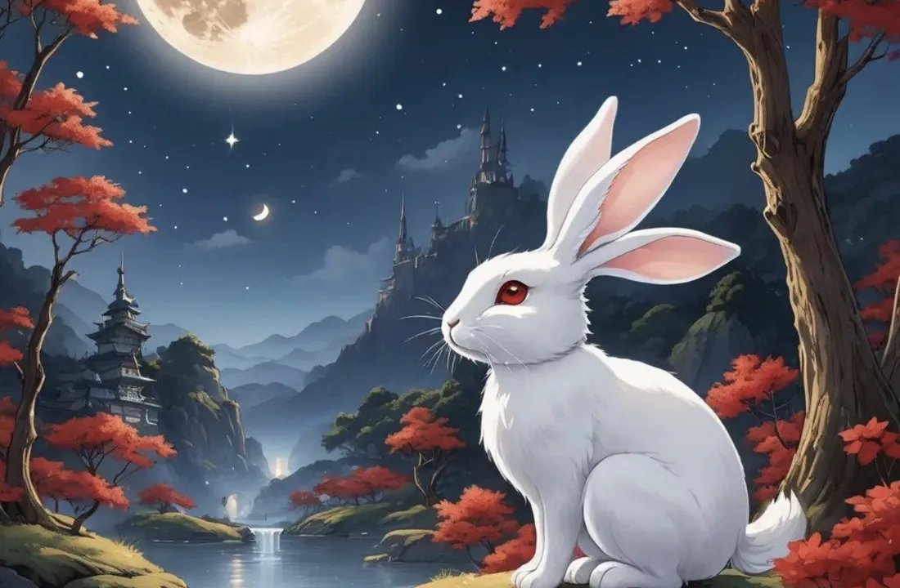

Zodiac Stories & Legends
The Rabbit's Clever Crossing: A Zodiac Legend
The Rabbit could not swim and could not fly, yet it finished fourth, ahead of the Dragon and the Horse. Here is how it crossed the river, and why rabbits are said to live on the moon.

A small animal and a wide river
In the folk tale of the Great Race, the Jade Emperor promised a place in the calendar to each animal that crossed the river to reach him. For the Rabbit this was a serious problem. It was quick on land, but it could not swim, and the current was strong.
Stone by stone
The Rabbit did not jump in and hope for the best. It studied the river and spotted a line of stones just above the water. Light and nimble, it hopped from one stone to the next, never staying long enough to slip.
Halfway across, the stones ran out. The Rabbit grabbed a floating log and held on as the current carried it along. It was safe, but drifting, and the far bank was still out of reach.
A helping breath from the Dragon
Above the river flew the Dragon, which had stopped to bring rain to a village. Seeing the Rabbit stuck on its log, the Dragon blew a gentle breath that pushed the log to the shore. The Rabbit hopped off and reached the Emperor in fourth place, just ahead of the Dragon itself. The kind Dragon's side of the story is told in The Dragon's Legend.
What the crossing says about the Rabbit sign
The Rabbit's crossing is a story of careful thinking rather than force. It fits how our Year of the Rabbit guide describes the sign: gentle, thoughtful and diplomatic, valuing harmony and skilled at avoiding conflict. The same guide notes the Rabbit's weak side: it can be overly cautious and avoid confrontations that are actually needed. In the race, caution worked, but the Rabbit still needed help to finish, and it accepted that help gratefully.
The rabbit in the moon
The Rabbit is linked to another famous legend that has nothing to do with the race. Look at the full moon, and many people across Asia see the shape of a rabbit. In China, poems from the Warring States period already mention a hare on the moon, and Han-dynasty poets called it the Jade Hare. Later stories make it the companion of Chang'e, the moon goddess, pounding the elixir of life in a mortar.
A Buddhist tale, one of the Jataka stories of the Buddha's past lives, tells it differently. A monkey, an otter, a jackal and a hare vow to give to anyone in need. When an old man asks for food, the hare has only grass to offer, so it throws itself into his fire. The old man is the god Sakka (Indra) in disguise, and, moved by the hare's selflessness, he draws its likeness on the moon for everyone to see.
The moon rabbit in Cambodia
The moon rabbit is part of local folklore across Asia, including Cambodia, Thailand, Myanmar, Vietnam, Sri Lanka and India. In Cambodia it is linked with the full-moon celebrations of the Water Festival (Bon Om Touk). In the Khmer zodiac the Rabbit year is called Thos.
Born in the Year of the Rabbit? Find your zodiac animal and element and read the full Rabbit guide.
Frequently asked questions
How did the Rabbit cross the river in the Great Race?
It hopped across on stones, then clung to a floating log, and the Dragon blew the log to the shore.
What place did the Rabbit finish?
Fourth, after the Rat, Ox and Tiger, and just ahead of the Dragon.
Why is there a rabbit on the moon?
Chinese legend makes it the Jade Hare, companion of the moon goddess Chang'e. A Buddhist Jataka tale says the god Sakka drew the hare on the moon to honor its selflessness.
Sources and further reading
- Wikipedia: Chinese zodiac — the Great Race folk tale and its variants, and the link between the animals and the Earthly Branches.
- Wikipedia: Moon rabbit — the Jade Hare and Chang'e, the Buddhist Jataka tale, and the legend's place in Cambodian folklore.
The Great Race and the other tales here are folk tales, told in many versions; they are not historical events. Personality traits are traditional zodiac beliefs, shared for culture and entertainment.
Explore more: The Great Zodiac Race · Year of the Rabbit guide · The Dragon's Legend · Water Festival (Bon Om Touk) · All Zodiac Stories & Legends
← Back to Zodiac Stories & Legendsរឿងនិទាន និងរឿងព្រេងរាសីចិន
ទន្សាយឆ្លងទន្លេដោយប្រាជ្ញា៖ រឿងព្រេងរាសីចិន
ទន្សាយ (ថោះ) ហែលទឹកមិនកើត ហើយក៏ហោះមិនបាន ប៉ុន្តែវាបែរជាមកដល់ទីបួន មុននាគ (រោង) និងសេះ (មមី)។ ខាងក្រោមនេះ ជារបៀបដែលវាឆ្លងទន្លេ និងហេតុអ្វីបានជាគេនិយាយថា ទន្សាយរស់នៅលើព្រះចន្ទ។
សត្វតូច និងទន្លេធំ
ក្នុងរឿងនិទានប្រជាប្រិយអំពីការប្រណាំងដ៏ធំ ស្ដេចស្ថានសួគ៌ (Jade Emperor) ទ្រង់បានសន្យាផ្ដល់កន្លែងមួយក្នុងប្រតិទិន ដល់សត្វនីមួយៗ ដែលឆ្លងទន្លេមកដល់ចំពោះព្រះភ័ក្ត្រទ្រង់។ សម្រាប់ទន្សាយ នេះជាបញ្ហាធ្ងន់ធ្ងរមួយ។ វារត់លឿននៅលើដី ប៉ុន្តែហែលទឹកមិនកើត ហើយចរន្តទឹកក៏ខ្លាំងទៀត។
ពីថ្មមួយទៅថ្មមួយ
ទន្សាយមិនបានលោតចូលទឹក ហើយសង្ឃឹមលើសំណាងនោះទេ។ វាពិនិត្យមើលទន្លេ ហើយឃើញថ្មមួយជួរ ដែលលយផុតពីលើទឹកបន្តិច។ ដោយខ្លួនស្រាល និងរហ័សរហួន វាលោតពីថ្មមួយទៅថ្មមួយ ដោយមិនដែលឈរលើថ្មណាយូរ ល្មមនឹងរអិលធ្លាក់ឡើយ។
ពេលទៅដល់ពាក់កណ្ដាលទន្លេ ថ្មក៏អស់។ ទន្សាយចាប់តោងគល់ឈើអណ្ដែតមួយ ហើយតោងជាប់ ខណៈចរន្តទឹកនាំវារសាត់ទៅ។ វាមានសុវត្ថិភាព ប៉ុន្តែកំពុងរសាត់ ហើយច្រាំងម្ខាងទៀត នៅតែឆ្ងាយពេក មិនអាចទៅដល់បាន។
ខ្យល់ផ្លុំជួយពីនាគ
នៅពីលើទន្លេ នាគកំពុងហោះហើរ បន្ទាប់ពីបានឈប់បង្អុរភ្លៀងឲ្យភូមិមួយ។ ពេលឃើញទន្សាយជាប់គាំងលើគល់ឈើ នាគក៏ផ្លុំខ្យល់ថ្នមៗ រុញគល់ឈើនោះទៅដល់ច្រាំង។ ទន្សាយលោតចុះ ហើយទៅដល់ចំពោះព្រះភ័ក្ត្រស្ដេចស្ថានសួគ៌ ក្នុងលំដាប់ទីបួន មុននាគខ្លួនឯងតែបន្តិច។ រឿងរ៉ាវផ្នែកខាងនាគដ៏សប្បុរស ត្រូវបាននិទាននៅក្នុង រឿងព្រេងនាគ។
ការឆ្លងទន្លេនេះ ប្រាប់អ្វីខ្លះអំពីរាសីថោះ
ការឆ្លងទន្លេរបស់ទន្សាយ ជារឿងនៃការគិតពិចារណាដោយប្រុងប្រយ័ត្ន ជាជាងការប្រើកម្លាំង។ វាស៊ីគ្នានឹងរបៀបដែលមគ្គុទ្ទេសក៍ឆ្នាំថោះរបស់យើង ពិពណ៌នារាសីនេះ៖ ទន់ភ្លន់ ចេះគិតគូរ និងចេះសម្របសម្រួល ឲ្យតម្លៃលើភាពសុខដុម និងពូកែជៀសវាងជម្លោះ។ មគ្គុទ្ទេសក៍ដដែល ក៏កត់សម្គាល់ពីចំណុចខ្សោយរបស់ថោះដែរ៖ ថោះអាចប្រុងប្រយ័ត្នហួសហេតុ ហើយជៀសវាងការប្រឈមមុខ ដែលតាមពិតចាំបាច់ត្រូវធ្វើ។ ក្នុងការប្រណាំង ការប្រុងប្រយ័ត្នបានជួយ ប៉ុន្តែទន្សាយនៅតែត្រូវការជំនួយ ដើម្បីទៅដល់ទីបញ្ចប់ ហើយវាបានទទួលយកជំនួយនោះ ដោយដឹងគុណ។
ទន្សាយនៅលើព្រះចន្ទ
ទន្សាយ ក៏ជាប់ទាក់ទងនឹងរឿងព្រេងដ៏ល្បីមួយទៀត ដែលមិនពាក់ព័ន្ធអ្វីនឹងការប្រណាំងសោះ។ ពេលសម្លឹងមើលព្រះចន្ទពេញវង់ មនុស្សជាច្រើននៅទូទាំងអាស៊ី មើលឃើញរូបរាងទន្សាយ។ នៅប្រទេសចិន កំណាព្យពីសម័យរដ្ឋច្បាំងគ្នា (Warring States) បាននិយាយអំពីទន្សាយមួយនៅលើព្រះចន្ទរួចទៅហើយ ហើយកវីសម័យរាជវង្សហាន ហៅវាថា ទន្សាយមរកត (Jade Hare)។ រឿងនិទាននៅសម័យក្រោយៗ ឲ្យវាក្លាយជាដៃគូរបស់ Chang'e ទេពធីតានៃព្រះចន្ទ ដែលកំពុងបុកថ្នាំអម្រឹតក្នុងត្បាល់។
រឿងនិទានព្រះពុទ្ធសាសនាមួយ ដែលជារឿងជាតកមួយ អំពីអតីតជាតិរបស់ព្រះពុទ្ធ និទានរឿងនេះខុសពីនេះ។ ស្វា ភេ ចចក និងទន្សាយ បានប្ដេជ្ញាថានឹងឲ្យទានដល់អ្នកណាក៏ដោយដែលខ្វះខាត។ ពេលបុរសចំណាស់ម្នាក់សុំអាហារ ទន្សាយមានតែស្មៅប៉ុណ្ណោះសម្រាប់ឲ្យ ដូច្នេះវាក៏លោតចូលទៅក្នុងភ្លើងរបស់គាត់។ បុរសចំណាស់នោះ គឺសក្កទេវរាជ (ព្រះឥន្ទ) ដែលបំប្លែងខ្លួនមក ហើយដោយរំភើបចិត្តនឹងការលះបង់ខ្លួនរបស់ទន្សាយ ទ្រង់ក៏គូររូបទន្សាយទុកលើព្រះចន្ទ ឲ្យមនុស្សទាំងឡាយបានឃើញ។
ទន្សាយលើព្រះចន្ទ នៅកម្ពុជា
ទន្សាយលើព្រះចន្ទ ជាផ្នែកមួយនៃរឿងព្រេងនិទានប្រជាប្រិយក្នុងស្រុក នៅទូទាំងអាស៊ី រួមទាំងកម្ពុជា ថៃ មីយ៉ាន់ម៉ា វៀតណាម ស្រីលង្កា និងឥណ្ឌា។ នៅកម្ពុជា រឿងនេះជាប់ទាក់ទងនឹងពិធីអបអរព្រះចន្ទពេញវង់ ក្នុងព្រះរាជពិធីបុណ្យអុំទូក។ ក្នុងរាសីខ្មែរ ឆ្នាំទន្សាយហៅថា ឆ្នាំថោះ។
កើតឆ្នាំថោះមែនទេ? ស្វែងរកសត្វរាសី និងធាតុរបស់អ្នក ហើយអានមគ្គុទ្ទេសក៍ឆ្នាំថោះពេញលេញ។
សំណួរដែលគេសួរញឹកញាប់
តើទន្សាយឆ្លងទន្លេដោយរបៀបណា ក្នុងការប្រណាំងដ៏ធំ?
វាលោតឆ្លងលើថ្ម រួចតោងគល់ឈើអណ្ដែតមួយ ហើយនាគបានផ្លុំគល់ឈើនោះទៅដល់ច្រាំង។
តើទន្សាយមកដល់លំដាប់ទីប៉ុន្មាន?
ទីបួន បន្ទាប់ពីកណ្ដុរ (ជូត) គោ (ឆ្លូវ) និងខ្លា (ខាល) ហើយមុននាគតែបន្តិច។
ហេតុអ្វីមានទន្សាយនៅលើព្រះចន្ទ?
រឿងព្រេងចិនចាត់ទុកវាជាទន្សាយមរកត ដែលជាដៃគូរបស់ Chang'e ទេពធីតានៃព្រះចន្ទ។ រឿងជាតកក្នុងព្រះពុទ្ធសាសនាមួយ និយាយថា សក្កទេវរាជបានគូររូបទន្សាយលើព្រះចន្ទ ដើម្បីលើកតម្កើងការលះបង់របស់វា។
ប្រភព និងឯកសារអានបន្ថែម
- Wikipedia: Chinese zodiac — រឿងនិទានប្រជាប្រិយអំពីការប្រណាំងដ៏ធំ និងការនិទានបែបផ្សេងៗ ព្រមទាំងទំនាក់ទំនងរវាងសត្វទាំងនេះ និងមែកផែនដី។
- Wikipedia: Moon rabbit — ទន្សាយមរកត និង Chang'e រឿងជាតកក្នុងព្រះពុទ្ធសាសនា និងទីតាំងរបស់រឿងព្រេងនេះ ក្នុងរឿងនិទានប្រជាប្រិយខ្មែរ។
ការប្រណាំងដ៏ធំ (Great Race) និងរឿងផ្សេងៗទៀតនៅទីនេះ ជារឿងនិទានប្រជាប្រិយ ដែលគេនិទានតៗគ្នាច្រើនបែបខុសៗគ្នា មិនមែនជាព្រឹត្តិការណ៍ប្រវត្តិសាស្ត្រទេ។ បុគ្គលិកលក្ខណៈរបស់សត្វរាសីនីមួយៗ ជាជំនឿតាមប្រពៃណី ដែលយើងចែករំលែកសម្រាប់ការស្វែងយល់វប្បធម៌ និងការកម្សាន្ត។
អានបន្ថែម៖ ការប្រណាំងដ៏ធំនៃរាសីចិន · មគ្គុទ្ទេសក៍ឆ្នាំថោះ · រឿងព្រេងនាគ · ព្រះរាជពិធីបុណ្យអុំទូក · រឿងនិទាន និងរឿងព្រេងរាសីចិនទាំងអស់
← ត្រឡប់ទៅរឿងនិទាន និងរឿងព្រេងរាសីចិន